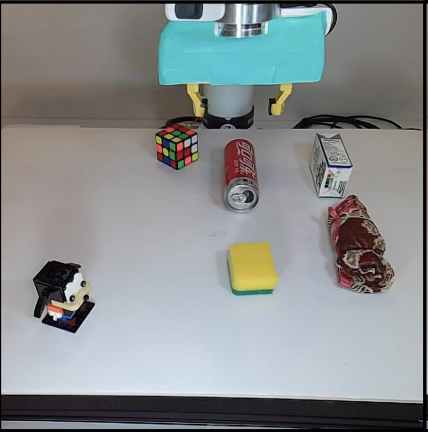
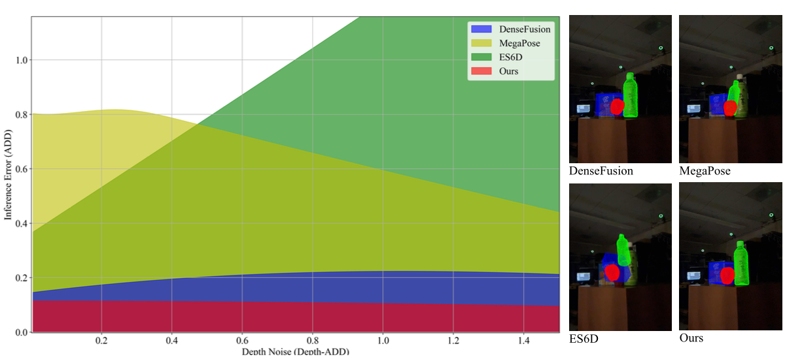

[2025/05] 🎉 I join Waymo as a perception engineer intern.
[2025/04] 🎉 One paper gets accepted to CVPR2025 workshop mobile AI.
[2024/10] 🎉 One paper gets accepted to WACV2025.
[2024/08] 🎉 I join CMU Robotics Institute as a graduate student.
[2024/07] 🎉 One paper gets accepted to ICML2024 workshop DMLR.
[2022/08] 🎉 I join UC Berkeley as a visiting student.
[2020/09] 🎉 I join CUHKSZ as a Data Science major undergraduate.
Intro
Hi there , I am currently a graduate student majored in Master of Computer Vision at School of Computer Science, Carnegie Mellon University. Before that, I received my B.S. degree in Data Science (CS track) at the Chinese University of Hong Kong, Shenzhen. In 2022, I was a visiting student at the Department of EECS, University of California, Berkeley.
My professional and research interest lies in Computer Vision and Robotics Learning, aiming to enhance robots' 3D perception. I have the honor of being advised by Prof. Allen Yang from the OpenARK Lab at the Department of EECS, University of California, Berkeley. I was also honored to be advised by Dr. Jianlong Fu from the Multimedia Search and Mining Group, at Microsoft Research Asia, Beijing, China. My research areas include Vision-Language Model, 3D Computer Vision and VR/AR/MR. I would like to explore more interesting areas in 3D perception and Vision Foundation Model in the future!
Research Interest: 3D Computer Vision, Vision-Language Model, and VR/AR/MR
2024

Transferring Foundation Models for Generalizable Robotic Manipulation
Jiange Yang, Wenhui Tan, Chuhao Jin, Keling Yao, Bei Liu, Jianlong Fu, Ruihua Song, Gangshan Wu, Limin Wang WACV, 2025 (Oral) [arXiv][Video]
We propose a novel paradigm that effectively leverages language-reasoning segmentation mask generated by internet-scale foundation models, to condition robot manipulation tasks.

Robust Digital-Twin Localization via An RGBD-based Transformer Network and A Comprehensive Evaluation on a Mobile Dataset
Zixun Huang*, Keling Yao*, Seth Z. Zhao*, Chuanyu Pan*, Tianjian Xu, Weiyu Feng, Allen Y. Yang CVPR@MAI, 2025 ICML@DMLR, 2024 [project page][arXiv][Video]
We propose a transformer-based 6DoF pose estimator designed to achieve state-of-the-art accuracy under real-world noisy data. To systematically validate the new solution's performance against the prior art, we also introduce a novel RGBD dataset called Digital Twin Tracking Dataset v2 (DTTD2).
 , I am currently a graduate student majored in Master of Computer Vision at School of Computer Science, Carnegie Mellon University. Before that, I received my B.S. degree in Data Science (CS track) at the Chinese University of Hong Kong, Shenzhen. In 2022, I was a visiting student at the Department of EECS, University of California, Berkeley.
, I am currently a graduate student majored in Master of Computer Vision at School of Computer Science, Carnegie Mellon University. Before that, I received my B.S. degree in Data Science (CS track) at the Chinese University of Hong Kong, Shenzhen. In 2022, I was a visiting student at the Department of EECS, University of California, Berkeley.